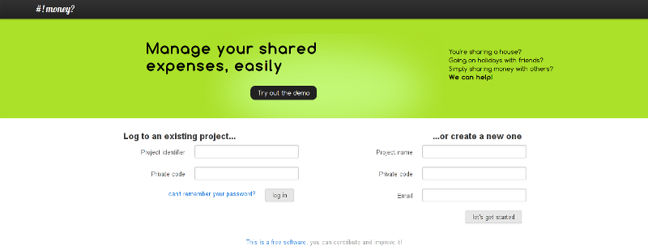

TL;DR: We're kick-starting a new application to manage your shared expenses. Have a look at http://ihatemoney.notmyidea.org
As a student, I lived in a lot of different locations, and the majority of them had something in common: I lived with others. It usually was a great experience (and I think I will continue to live with others). Most of the time, we had to spend some time each month to compute who had to pay what to the others.
I wanted to create a pet project using flask, so I wrote a little (\~150 lines) flask application to handle this. It worked out pretty well for my housemates and me, and as we had to move into different locations, one of them asked me if he could continue to use it for the year to come.
I said yes and gave it some more thoughts: We probably aren't the only ones interested by such kind of software. I decided to extend a bit more the software to have a concept of projects and persons (the list of persons was hard-coded in the first time, boooh!).
I then discussed with a friend of mine, who was excited about it and wanted to learn python. Great! That's a really nice way to get started. Some more friends were also interested in it and contributed some features and provided feedback (thanks Arnaud and Quentin!)
Since that, the project now support multiple languages and provides a REST API (android and iphone apps in the tubes!), into other things. There is no need to register for an account or whatnot, just enter a project name, a secret code and a contact email, invite friends and that's it (this was inspired by doodle)!

You can try the project at http://ihatemoney.notmyidea.org for now, and the code lives at https://github.com/spiral-project/ihatemoney/.
Features
In the wild, currently, there already are some implementations of this shared budget manager thing. The fact is that most of them are either hard to use, with a too much fancy design or simply trying to do too much things at once.
No, I don't want my budget manager to make my shopping list, or to run a blog for me, thanks. I want it to let me focus on something else. Keep out of my way.
No user registration
You don't need to register an account on the website to start using it. You just have to create a project, set a secret code for it, and give both the url and the code to the people you want to share it with (or the website can poke them for you).
Keeping things simple
"Keep It Simple, Stupid" really matches our philosophy here: you want to add a bill? Okay. Just do it. You just have to enter who paid, for who, how much, and a description, like you would have done when you're back from the farmer's market on raw paper.
No categories
Some people like to organise their stuff into different "categories": leisure, work, eating, etc. That's not something I want (at least to begin with).
I want things to be simple. Got that? Great. Just add your bills!
Balance
One of the most useful thing is to know what's your "balance" compared to others. In other words, if you're negative, you owe money, if you're positive, you have to receive money. This allows you to dispatch who has to pay for the next thing, in order to re-equilibrate the balance.
Additionally, the system is able to compute for you who has to give how much to who, in order to reduce the number of transactions needed to restore the balance.
API
All of what's possible to do with the standard web interface is also available through a REST API. I developed a simple REST toolkit for flask for this (and I should release it!).
Interested?
This project is open source. All of us like to share what we are doing and would be happy to work with new people and implement new ideas. If you have a nice idea about this, if you want to tweak it or to fill bugs. Don't hesitate a second! The project lives at http://github.com/spiral-project/ihatemoney/